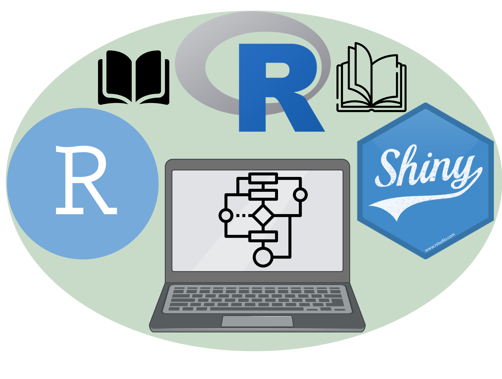

Welcome to our dedicated resource section for R Programming, Rmarkdown, and Shiny. We understand that the journey to mastering any programming language can be challenging, but also incredibly rewarding. To assist you on this journey, we have compiled a list of books that we believe are invaluable to anyone interested in deepening their knowledge in these areas.
Below, you will find links to a variety of books that cover everything from the fundamentals of R programming to more advanced topics such as creating interactive applications using Shiny and crafting dynamic reports with Rmarkdown. These books have been chosen for their clarity, depth, and practical applicability.
Remember, the best way to learn is by doing. Therefore, we encourage you to try out the examples and exercises provided in these books. We hope these resources prove useful, and we wish you a rewarding learning journey!
Now, without further ado, here are the links to the books:
ARNOLD, Christoph Hanck, Martin; GERBER, Alexander; SCHMELZER, Martin. Introduction to Econometrics with R. University of Duisburg-Essen. 2021. Link here.
ARNOLD, Jeffrey, WICKHAM, Hadley, GROLEMUND, Garrett. R for Data Science: Exercise Solutions. O’Reilly Media; 1st edition, 2019. Link here.
BOEHMKE, Bradley; GREENWELL, Brandon. Hands-On Machine Learning with R. Chapman and Hall/CRC; 1st edition, 2019. Link here.
CAMELETTI, Michela. Machine Learning for Economics 2020/21: R labs. University of Bergamo (academic year 2020/21), 2021. Link here.
CEJA, Enrique Garcia. Behavior Analysis with Machine Learning Using R. Chapman and Hall/CRC; 1st edition, 2021. Link here.
CHANG, Winston. R Graphics Cookbook. O’Reilly Media, 2nd edition, 2018. Link here.
Curso-R. Ciencia de Dados em R. Link here.
DEBASTIANI, Vanderlei Julio. Tutoriais para R. Link here.
FAY, Colin. Engineering Production-Grade Shiny Apps. Chapman and Hall/CRC; 1st edition, 2021. Link here.
GROLEMUND, Garrett. Hands-On Programming with R. O’Reilly Media, 1st edition, 2014. Link here.
GROSSER, Malte; BUMANN, Henning;WICKHAM, Hadley. Advanced R Solutions. CRC Press; 2nd edition, 2019. Link here.
HYNDMAN, Rob J; ATHANASOPOULOS, George. Forecasting: Principles and Practice. Otexts, 3rd edition, 2021. Link here.
IRIZARRY, Rafael A. Introduction to Data Science: Data Analysis and Prediction Algorithms with R. Chapman and Hall/CRC; 1st edition, 2019. Link here.
ISMAy, Chester; KIM, Albert Y. Statistical Inference via Data Science: A ModernDive into R and the Tidyverse. CRC Press; Illustrated edição, 2019. Link here.
JANSSENS, Jeroen. Data Science at the Command Line: Facing the Future with Time-Tested Tools. O’Reilly Media, 1st edition, 2014. Link here.
JJENKINS-SMITH, Hank et al. Quantitative Research Methods for Political Science, Public Policy and Public Administration: With Applications in R. 4th Edition. University of Oklahoma. Link here.
LOVELACE, Robin; GILLESPIE, Colin. Efficient R programming. O’Reilly Media; 1st edition, 2017. Link here.
LUCIAN, Bruno; JAKELLINE, Claudia. Introdução à Análise de Dados em R. 2016. Link here.
KUHN, Max; SILGE, Julia. Tidy Modeling with R: A Framework for Modeling in the Tidyverse. O’Reilly Media, 1st edition, 2022. Link here.
PENG, Roger D.R Programming for Data Science. Lulu.com, 5th Edition, 2012. Link here.
SIEVERT, Carson. Interactive web-based data visualization with R, plotly, and shiny. Chapman and Hall/CRC; 1st edition, 2020. Link here.
SILGE, Julia; ROBINSON, David. Text Mining with R: A Tidy Approach. O’Reilly Media, 1st edition, 2017. Link here.
WICKHAM, Hadley. Advanced R. CRC Press; 2nd edition, 2019. Link here.
WICKHAM, Hadley , GROLEMUND, Garrett. R for Data Science. Alta Books, 1st edition, 2019. Link here.
WICKHAM, Hadley. ggplot2: elegant graphics for data analysis. Springer; 3rd edition, 2021. Link here.
WICKHAM, Hadley. Mastering Shiny. O’Reilly Media;1st edition, 2021. Link here.
WICKHAM, Hadley; BRYAN, Jenny. R packages. Organize, Test, Document, and Share Your Code. O’Reilly Media, 1st edition, 2015. Link here.
WILKE, Claus O. Fundamentals of Data Visualization: A Primer on Making Informative and Compelling Figures. O’Reilly Media, 1st edition, 2019. Link here.
XIE, Yihui. bookdown: Authoring Books and Technical Documents with R Markdown. CRC Press; 1st edition, 2016. Link here.
XIE, Yihui; ALLAIRE, Joseph J.; GROLEMUND, Garrett. R Markdown: The Definitive Guide. CRC Press; 1st edition, 2019. Link here.
XIE, Yihui; DERVIEUX, Christophe; RIEDERER, Emily. R Markdown Cookbook. CRC Press, 1st edition, 2020. Link here.
XIE, Yihui; THOMAS, Amber; HILL, Alison Presmanes. blogdown: Creating Websites with R Markdown. CRC Press; 1st edition, 2017. Link here.
ZEVIANI, Walmes Marques. Manual de Planejamento e Análise de Experimentos com R. Departamento de Estatística da UFPR, 2019. Link here.